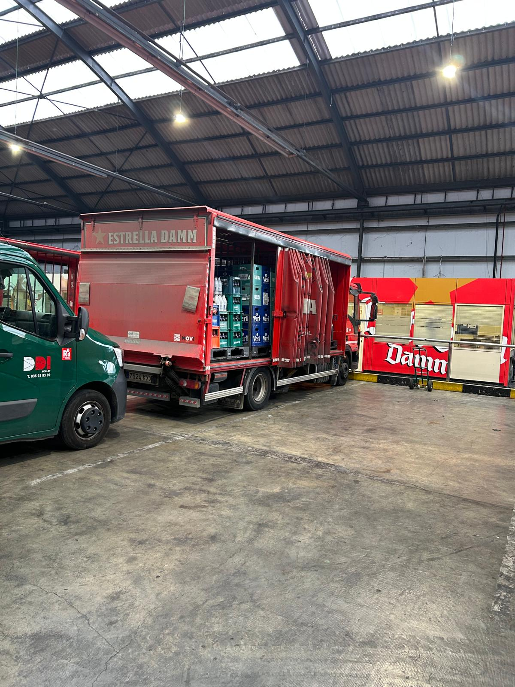

Optimized delivery sequence
Stop grouping, time-window prioritization and operational routing for the driver.
15 stops · 22 clients
The system groups nearby clients when delivery windows, distance and unloading complexity are compatible.
Stop 1 · Plaça Real
08:153 clients grouped · early access required
- Bar Sol · 8 crates
- Café Centre · 4 crates
- Restaurant Mar · 2 kegs
Stop 2 · Eixample
09:052 clients grouped · compatible time window
- Hotel Nord · 6 crates
- Bar Provença · 5 crates
Stop 3 · Gràcia
10:10Strict time window · priority stop
- Restaurant Vila · 10 crates
Stop 4 · Sant Antoni
11:00Expected returnable collection
- Bar Mercat · 7 crates
- Cafeteria Ronda · 3 crates
Why this route?
Several nearby customers can be served from a single parking point.
Early or strict time windows are moved up in the sequence.
The route is coordinated with the load distribution to improve unloading efficiency.
Real distribution environment
The route plan must be realistic: limited urban parking, grouped stops and coordinated unloading from the truck side access.
